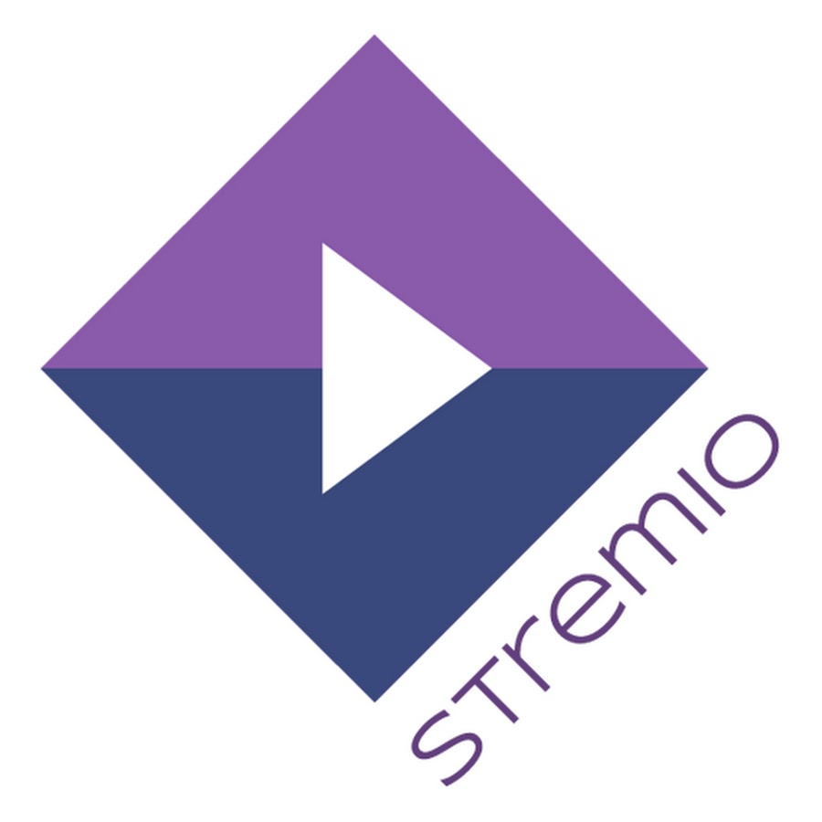
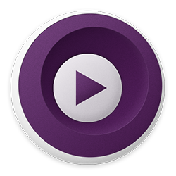

Films
Dit zijn aanraders om (illegaal) films te kijken.
Stremio (FOSS)
Stremio is een streaming service, zoals Netflix. Het is makkelijk te gebruiken en te installeren. Je hebt wel "plugins" nodig om links te kunnen krijgen om te streamen, bijvoorbeeld van Torrentio. Plugins zijn alleen wel closed course.
Stremio is piracy, maar helemaal veilig. Dit komt vooral omdat het geen toegang heeft dat je files en omdat het (gedeeltelijk) open source is.
VLC (FOSS)
VLC is een simpele multimedia player en kan videos en films afspelen. Erg aan te raden in plaats van de standaard Windows Media Player.
MPV (FOSS)
Net als VLC is MPV een multimedia player. Dit is zeer aan te raden met Stremio.
Kodi (FOSS)
Kodi is net als Stremio een manier om film af te spelen. Het dient meer als een OS en kan geen videos streamen, je moet ze eerst downloaden. Ik heb dit thuis op mijn tv en mijn vader gebruikt het vaak. Het kan zelfs RetroArch (zie "Emulators") gebruiken om te gamen! Stremio is meer aan te raden als je gewoon films wilt kijken.